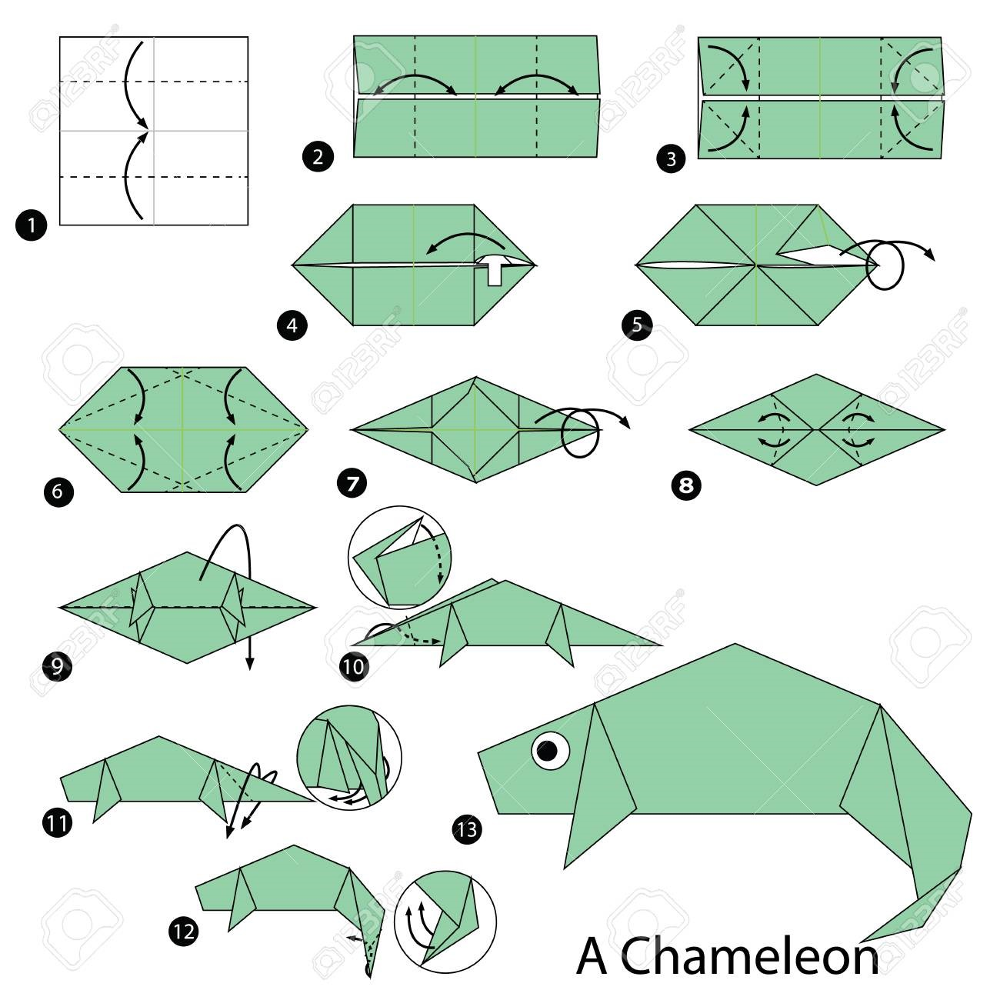
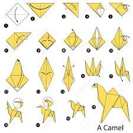
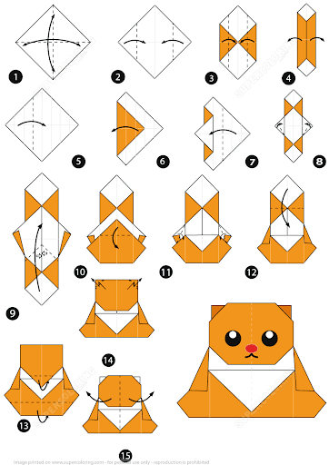

Origami Designs
 Follow us
Follow us
Follow us
Follow us

Interesting facts abut chameleons
- Chameleons are known for being able to change the colour of their skin for camouflage
- Chameleons also have a very fascinating prehensile tail. This means that they can grab things with their tails
- Chameleon tounges can accelerate from 0 to 60 mph in under a hundreth of a second. Their tails are also three times longer than their bodies

Interesting facts about pigeons
- Pigeons have "homing" abilities. They can find their way home no matter how far away they are
- Many people have used pigeons to deliver messages via slips of paper tied to the bird's leg
- Pigeons are actually incredibly intelligent. They are also highly complex and emotional creatures

Interesting facts about camels
- Camels have extra-long eyelashes to prevent sand from entering their eyes
- A camel's hooves and soft and flexible to easily trek across the harsh desert terrain
- Camels don't use their hump to store water, they use it to store fat which they use if there is no food near

Interesting facts about bears
- The saying for survivng a bear attack in North America is, "If it's brown, lay down. If it's black, fight back"
- To keep a bear from eating your trash or food while camping, make sure to tie it up in a tree branch in a sack or bag
- Before going anywhere that you may encounter a bear, always do proper research to assure both your and the bear's safety